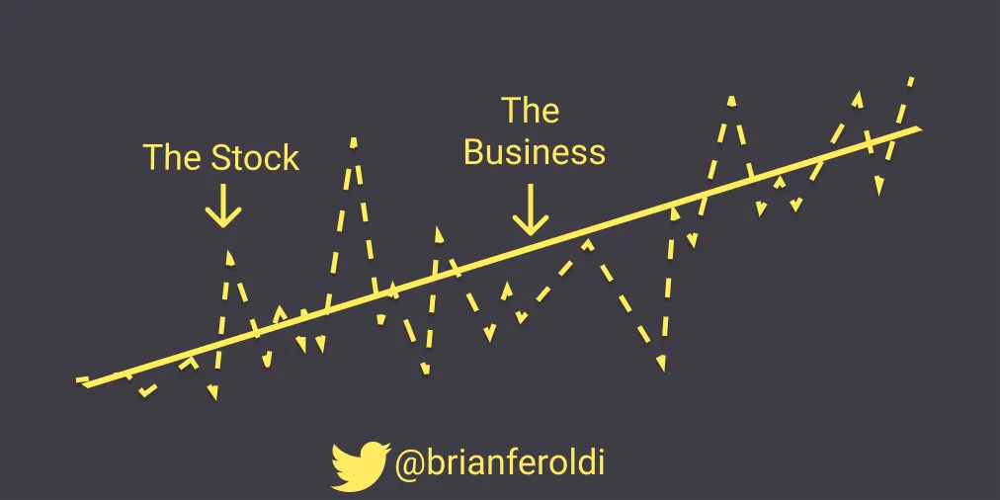
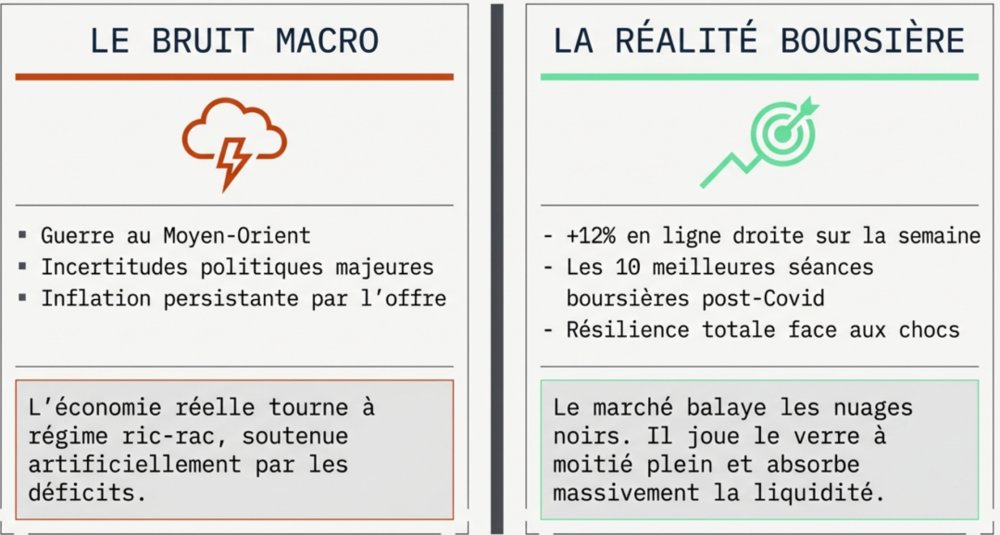
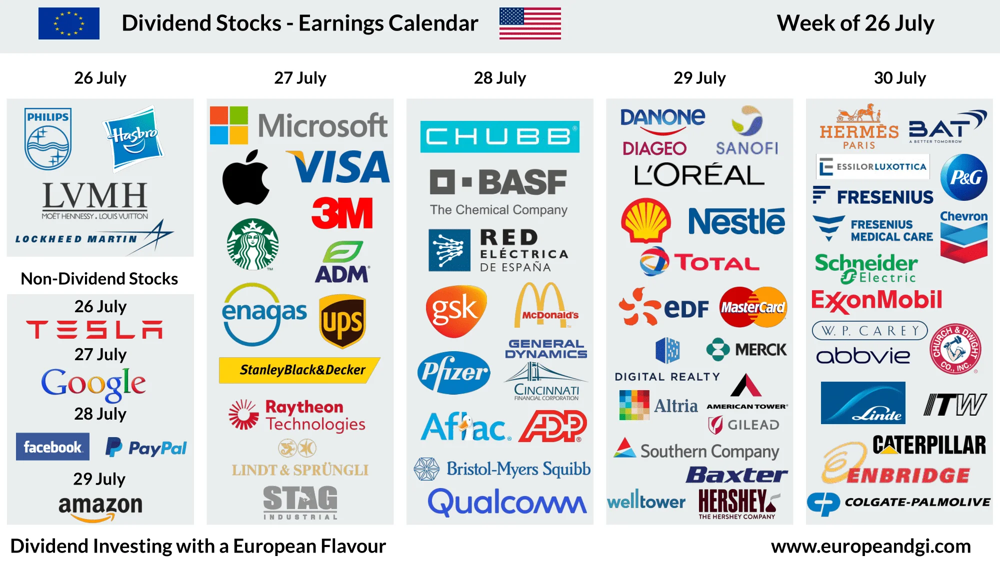
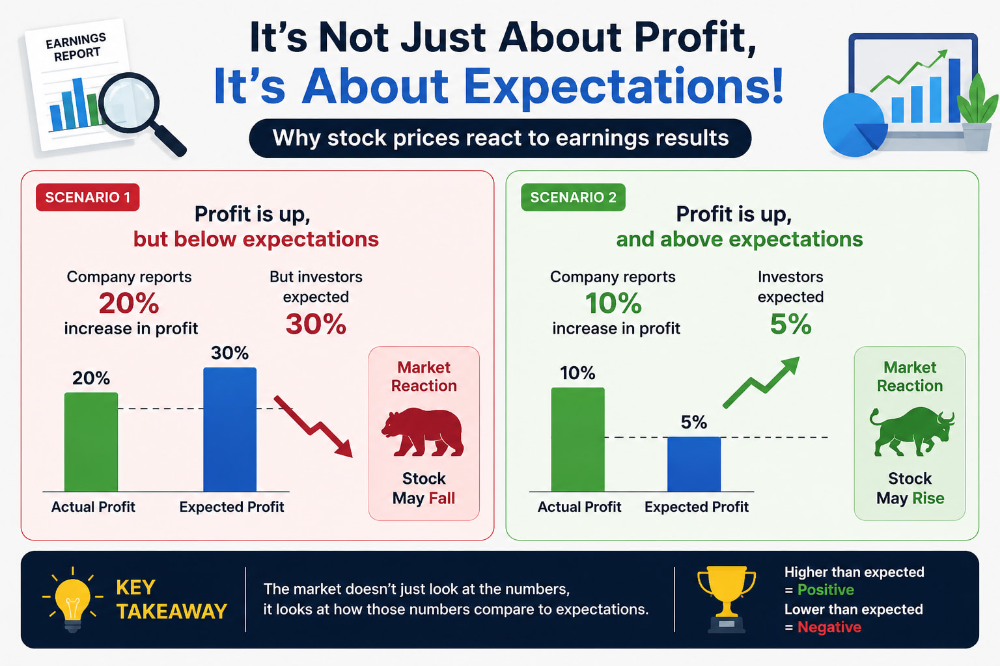
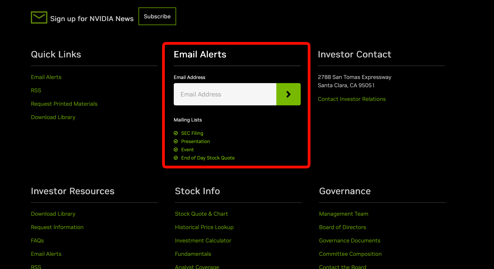
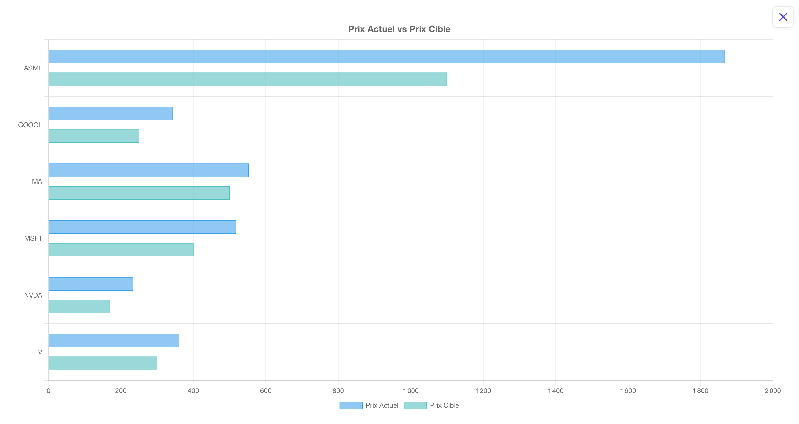
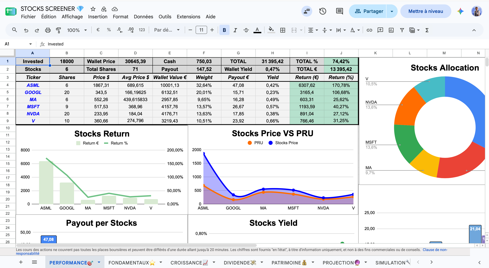

Nous touchons ici au paradoxe le plus complexe et le plus contre-intuitif de l'investissement en bourse. Une fois le travail d'analyse rigoureux effectué et les actions méticuleusement achetées, la meilleure chose à faire pour un investisseur est, mathématiquement parlant, de ne absolument rien faire. L'investissement performant à long terme est par nature une activité passive, silencieuse, et presque ennuyeuse. Et pourtant, notre cerveau humain, câblé pour l'action, l'adrénaline et la gratification immédiate, refuse obstinément l'inactivité.
Dans ce chapitre, nous allons définir la routine parfaite, sobre et redoutable de l'investisseur Quality. Comment surveiller son portefeuille efficacement sans sombrer dans l'obsession ? Quelles informations méritent réellement notre temps de cerveau disponible, et lesquelles ne sont que du bruit destructeur de richesse ?
1. L'Obsession du Prix : Le Piège Émotionnel du Débutant
Le syndrome le plus répandu chez les investisseurs qui débutent en bourse est l'incapacité viscérale à détacher leurs yeux de leur application de courtage. Il est totalement inutile de regarder son portefeuille tous les jours, toutes les heures, ou toutes les secondes lors de l'ouverture haletante des marchés américains. C'est une habitude non seulement stérile, mais profondément nocive pour votre santé mentale et financière.
Le marché boursier à court terme est irrationnel, régi par les algorithmes de trading haute fréquence et les émotions exacerbées de millions de participants. Benjamin Graham a immortalisé ce concept avec sa célèbre allégorie de Mr. Market. Imaginez que vous soyez associé avec un individu bipolaire nommé Mr. Market. Chaque jour, il vient frapper à votre porte pour vous proposer un prix différent pour vos parts. Les jours de panique médiatique, il est dépressif et vous brade ses parts pour une misère. Les jours d'euphorie irrationnelle, il est maniaque et vous réclame des sommes astronomiques.

Le légendaire gérant Peter Lynch résumait cette dynamique avec une justesse implacable : "Dans l'investissement, l'estomac est bien plus important que le cerveau". Si vous regardez le prix de vos actions tous les jours, vous écoutez Mr. Market. Vous subirez la volatilité de plein fouet et finirez inévitablement par céder à la panique. Gravez cette phrase dans votre esprit : L'investisseur Quality ne suit pas le cours de l'action, il suit le business de l'entreprise.
La citation à retenir 💬
"À court terme, le marché boursier est une machine à voter, mais à long terme, c'est une machine à peser."
— Benjamin Graham
2. Le Bruit vs L'Information : Le Régime Médiatique
Pour suivre efficacement le business, il faut d'abord apprendre à trier l'information de manière drastique. Les médias financiers traditionnels (chaînes d'information en continu, presse économique grand public) vivent de l'attention et de la sensationnalisation. Ils produisent un flux ininterrompu de "bruit" macroéconomique : les craintes d'inflation, les décisions de la Réserve Fédérale sur les taux, les tensions géopolitiques complexes, les prévisions apocalyptiques de récession...

Ce bruit macroéconomique est hors de votre zone d'influence et fondamentalement imprévisible. Tenter d'anticiper les soubresauts de l'économie mondiale est une mission chimérique. Ce qui doit capter 100% de votre attention, c'est la microéconomie, c'est-à-dire la santé fondamentale, tangible et mesurable des entreprises que vous détenez en portefeuille.
3. Le Suivi des Earnings Trimestriels : Le Cœur du Réacteur
La vie d'un investisseur long terme est rythmée par un événement cardinal qui a lieu quatre fois par an : la publication des résultats trimestriels (les fameux Earnings). C'est l'heure de vérité. Le moment sacré où la direction de l'entreprise vous ouvre ses livres de comptes, justifie ses choix stratégiques, et vous prouve que son avantage concurrentiel (le Moat) est toujours intact.

Le plus important de votre travail de gestion consiste à suivre et creuser ces rapports. Ne vous arrêtez jamais aux gros titres simplistes. Voici ce qu'il faut auditer avec rigueur lors de chaque trimestre :
- La croissance intrinsèque : Le Chiffre d'Affaires et le FCF (Free Cash Flow) progressent-ils toujours organiquement ?
- La résilience des marges : Les marges se maintiennent-elles malgré l'inflation ? Une contraction des marges est le premier symptôme d'une perte de Pricing Power.
- L'allocation du capital : Le PDG utilise-t-il l'argent généré pour augmenter sainement le dividende, racheter des actions à un prix attractif, ou financer de la R&D vitale ?
- La "Guidance" : Quelles sont les prévisions chiffrées de la direction pour le trimestre à venir ?

Un rappel psychologique vital : ignorez totalement la réaction du cours de l'action le jour de la publication. Wall Street est obnubilée par les attentes de court terme. Une entreprise magnifique peut annoncer des bénéfices records en hausse de +20%, et voir son action s'effondrer de -15% dans la journée simplement parce que trois analystes s'attendaient à +22%. Si vos analyses confirment que le business est sain et que le Moat s'élargit, ces chutes irrationnelles créent des opportunités historiques d'accumulation.
4. Automatiser et Centraliser l'Information
Pour rester à la pointe de l'information sans passer votre vie devant des terminaux financiers, vous devez instaurer une veille passive. La méthode la plus redoutable est de vous inscrire aux alertes e-mail directement sur les sites institutionnels (section Investor Relations) de vos entreprises en portefeuille.

Vous recevrez ainsi les communiqués de presse officiels, les dates de détachement des dividendes et les annonces d'acquisitions directement dans votre boîte de réception. En complément, la possibilité de suivre l'actualité via des newsletters financières ciblées et spécialisées est le moyen parfait pour être tenu au courant des analyses profondes, tout en gardant une hygiène mentale irréprochable face au bruit ambiant.
5. Tenir un Journal d'Investisseur (La Thèse)
Avant d'appuyer sur le bouton "Acheter", chaque investisseur sérieux devrait rédiger un "Journal de l'Investisseur". Ce n'est pas un exercice littéraire, mais un garde-fou psychologique. Notez, noir sur blanc, les trois ou quatre raisons fondamentales pour lesquelles vous achetez cette action aujourd'hui, et sous quelles conditions précises (perte du moat, dette toxique) vous seriez prêt à la vendre.
La mémoire humaine est faillible et hautement manipulable par les émotions. Dans deux ans, si l'action perd 30% dans un marché baissier global, vous paniquerez. Relire votre thèse d'investissement, écrite à froid avec une pleine lucidité, vous rappellera instantanément que l'entreprise détient toujours un monopole technologique et génère des milliards de flux de trésorerie. C'est l'antidote absolu contre la vente à perte irrationnelle.
6. La Stratégie des Prix Cibles
Comment acheter sans vérifier le prix toutes les cinq minutes ? La réponse réside dans la définition méticuleuse de "Prix Cibles" (Target Prices).

Pour chaque action de votre portefeuille et celles de votre Watchlist, calculez une valorisation juste (la Fair Value via DCF ou PER historique) et appliquez-y une marge de sécurité. Configurez ensuite de simples alertes de prix automatiques chez votre courtier. Dès lors, le travail est terminé. Si l'action s'en rapproche, ou mieux, atteint ce prix cible suite à une correction du marché, vous recevez une notification et passez sereinement à l'achat. Chercher à obtenir le prix parfait absolu (le bottom) est une vanité qui ne génère que du stress et du temps perdu.
7. Tout ce qui se mesure s'améliore : Le Dashboard Ultime
Un entrepreneur ne gère pas son entreprise à l'instinct ; il utilise une comptabilité rigoureuse. L'investisseur doit agir de même. La maxime est célèbre et universelle : "Tout ce qui peut être mesuré peut être amélioré".

Vous devez impérativement tracer toutes vos métriques pour visualiser la croissance de votre patrimoine : le montant exact de vos dividendes nets reçus chaque mois, le coût de chaque transaction, l'évolution de votre Yield on Cost, et votre diversification sectorielle. Malheureusement, les courtiers traditionnels offrent des interfaces pauvres et limitées. Que vous utilisiez un Tracker Google Sheets perfectionné, ou que vous optiez pour des applications de gestion patrimoniale de nouvelle génération (comme l'application BlueChip que nous avons développée spécifiquement pour le Quality Investing sur macOS), l'important est de disposer d'un outil visuel puissant qui transforme vos données brutes en décisions claires.
🔑 Ce qu'il faut retenir
La patience est la vertu cardinale de l'investisseur. Observer les cotations quotidiennes est un poison mental ; focalisez-vous exclusivement sur la solidité du business et fuyez le bruit macroéconomique des médias.
Le cœur de votre suivi doit s'articuler autour des publications de résultats trimestriels. Lisez les rapports, décryptez les analyses de fond et scrutez l'évolution des flux de trésorerie et de l'allocation du capital par le management.
Fixez vos prix cibles en amont, tenez un journal pour justifier rationnellement vos achats, et automatisez votre veille informationnelle (newsletters, alertes email). Enfin, mesurez méticuleusement vos progrès via un Dashboard adapté. L'excellence en bourse ne réside pas dans la frénésie transactionnelle, mais dans la discipline implacable d'une routine bien orchestrée.